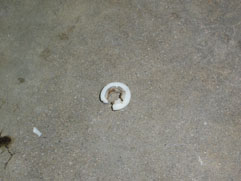

Before You Get Started:
What You'll Need:
9000 Specific Parts:
You will need five (actually six) 9000 specific parts.
- Trionic 5.2 ECU (re flashed to non-TCS software)(P/N- ANY)
- This will probably be the hardest part to source. You can DIY or find someone on one of the Saab forums to do it for you. Won't go into details on how to re flash in this guide. It may be possible to use a t5.5 ECU with some software modifications. I'm gonna test it and will update the guide if they'll work in place of the t5.2 ECU.
- Manual Throttle Body (P/N- New Style: 78 71 437 or Old Style: 91 16 724)
- The throttle parts varied form year to year but anything off a 91+ 4cyl car should work. 94-98 is new style and 91-93 is old style. Just get everything off the same car otherwise you'll have to make sure your parts will work together. Applies for next two items.
- Standard Throttle Cable(P/N- New Style: 45 25 515 or Old Style: 41 61 907)
- Throttle cable P/Ns are different for auto trans cars.
- Standard Throttle Pedal (P/N- 89 67 903)
- Should be the same part on all 90+ cars but the part I used from a 96 had clearance issues. More on how I made it work later on but be aware of this.
- Two rubber hoses for AIC to throttle body (P/N- 30 54 5466 and 91 28 703).
- These are the same on any 2.3ltr 9000.
Other Stuff:
These parts can be sourced from any 9000 or NG900 with t5.5.
- Throttle Position Sensor (P/N- 88 57 195)
- This exact p/n came off the 94-95 9000 turbo, 94-95 NG900 turbo, 91-94 c900 non-turbo. You should be able to use any sensor from a 94-98 9000 or 900 turbo as long as it has three electrical pins.
- Air Idle Control Valve (P/N- 87 87 996)
- Not really sure what car these came on but you can use any AIC off a 94+ 9000 turbo. You can also get the part off the a NG900 turbo. Should have two electrical pins and a straight through design like the one pictured.
- Coolant Sensor (P/N- 87 87 996)
- This is the standard coolant sensor for all pre 93 9000s and all c900s made after 85. Don't be a cheap ass; this is the one part I recommend you buy new.
- Wiring Connectors
- Wiring connectors for the TPS, coolant sensor, and AIC. You'll also need five pins that connect into the ECU. See the "Building Your Wiring Harness" section for more info.
Building the Wire Harness:
There are a total of three connectors that need to be wired into your existing engine wire harness. The easiest way to do this is to build a separate "piggy back" harness. In the end, it will consist of three wires for the TPS, two wires for the AIC, two wires for the coolant sensor, and one wire for the coolant sensor reference. For those of you who are bad at math, that's eight wires total. Here's where the wires are going:
Wiring Information:
TPS:
PIN 1 (Green/Red) to ECU PIN 42
PIN 2 (Black/White) to Intake manifold ground
PIN 3 (Gray) to ECU PIN 45
AIC:
PIN 1 (Red/Blue) to ECU PIN 49
PIN 2 (Blue/White) to Switched power source
Coolant Sensor:
PIN 1 (Yellow) to ECU PIN 68
PIN 2 (Black) to Intake manifold ground
Coolant Sensor Reference:
ECU PIN 66 (Black) to Intake manifold ground
NOTE: You don't need to know this info yet, but I'm adding it.
You can build the harness from scratch by sourcing the three connectors and five ECU PINs then adding wire.
However, for most people there's a better way. You'll need to find a 9000 or 900 t5.5 car with a complete engine wiring harness. These cars are still pretty common at self-service junkyards so check around.
First, you need to remove the engine harness from the car which isn't bad. Just remove connectors in the engine bay until the whole thing is free. Then, at the ECU, there are few large connectors (one going into the ECU, the others will have wires going into the car; varies year to year). Remove those and pull the harness off the car. Unravel all the tape to expose the wires.
After that, just follow the TPS, AIC, and coolant sensor connector wires back to the ECU/ grounding point/ switched power source(for AIC). You also need to get the coolant ground reference which is PIN 66 of the ECU connector.
Some of the newer cars have a different connector for the coolant sensor. If you get one of these harnesses, grab one of the fuel injector connectors. They're the same as the older style coolant connector.
Cut the wires at the ground point and switched power then follow the other wires to the ECU. Remove the wires for the ECU including the all-important PIN connector. How is this done you ask? Well, some nice person created a write-up to help us to just that.
CLICK HERE TO VIEW PIN REMOVAL GUIDE.
Do this all at the junkyard so you don't have to pay for the entire harness.
When you're finished, all the wires will be the perfect length with no need to solder or connect things together.
You should end up with something like you see here. Avoid the temptation to tape everything up right now. Wait until its on the car.
Alternative Method: You can use the existing wiring from TCS to wire in the connectors. Just move the PINs around at the ECU connector and splice in the TPS and AIC connectors. The disadvantage is your car will be harder put back to stock if ever wanted.
Lets get started-
You've got all the parts together and realized everything's been pretty easy so far. Well, this whole process is easy but there's one fiddly part.
I like to get the BS out of the way first so here we go. The first thing you'll need to do is remove the ETS throttle pedal.
In order to do this, you must first remove the throttle potentiometer, which is another part of the ETS system. The throttle potentiometer is held on to the car via a stud with a E-clip. I know, weird but that's how they did it. You'll need to use a flat blade screw driver to work the clip off then the throttle potentiometer just slides off. Well, its slides off with a little persuasion. Once it's loose, disconnect the electrical connector, and pull it out.
With the potentiometer out of the way, you can access the throttle pedal. The ETS pedal's held into a metal bracket using two plastic bushings. The bushings must be pressed out before the pedal will pull free. This can be difficult with the limited access and I ended up breaking one of the plastic bushings (see image) getting it out.
Once the pedal's free, reach up and push the plastic bushing holding the throttle cable to the pedal out of its seat and the cable should slide free.
The first thing you'll notice is the ETS pedal mounts differently than the standard pedal.
The good news is, your car comes ready to accept either pedal from the factory. If you look below the mounting point for the ETS pedal, you'll see a small hole and a larger hole pressed into the sheet metal. If you feel back into the carpet, there's find another small hole. That is where the new pedal will mount with two 5mm hex screws.
If you got the throttle pedal installed then give yourself a pat on the back. The hard part's behind done and you're soon to have a non-TCS car.
NOTE: Even though the Saab EPC lists the standard throttle pedal as being the same for all 9000's, I had some clearance issues. Basically, there's an L shaped stop on the pedal which was catching on the bracket for the old ETS pedal. My solution was to break the stop off and re-weld it about 1/4 of an inch down and over to make clearance. Don't know why it happened but be prepared for it. Chances are, you won't have an issue.